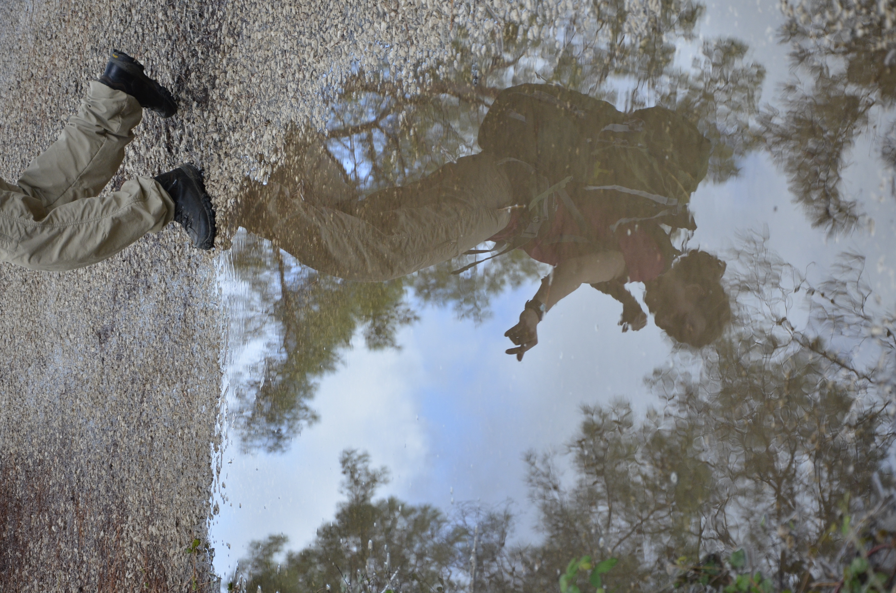
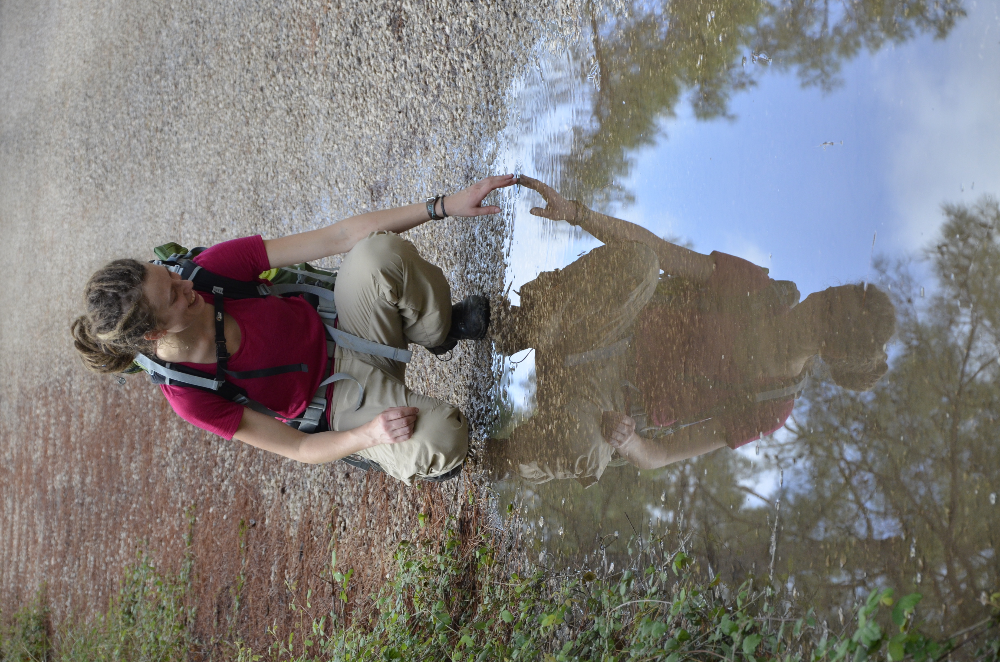

Lichtblick gesucht?!
neue Perspektiven finden
eigene Lösungen entwickeln
Herzlich Willkommen!
Sind Sie in Ihrem Leben an einem Punkt angelangt, an dem es Veränderung braucht?
- Innen oder Außen
- In Beziehungen zu anderen Menschen
- In Ihrem Arbeitsumfeld
- In Bezug auf Ihre Rollen und Verantwortung
- In Ihrem Umgang mit sich selbst
Häufig spüren wir das über innere Unruhe, Ängste oder Verlust von Freude. Manchmal zeigt es sich auch zuerst über körperliche Empfindungen wie Kopfschmerzen, Verspannungen, einen schwirrenden Kopf oder einen Knoten im Bauch…
Doch oft ist es nicht so leicht allein im Nebel der Gefühle und Gedanken einen Ansatz zur Lösung zu finden.
Ich begleite Sie auf dem Weg zu Ihrem Lichtblick. Schritt für Schritt.
Gemeinsam spüren wir Ihre innere Weisheit auf, die Ihnen sagt, ob Sie gerade eher Mut oder Annahme brauchen.
„Ich wünsche dir die Gelassenheit, Dinge hinzunehmen, die du nicht ändern kannst, den Mut, Dinge zu ändern,
die du ändern kannst und die Weisheit, das eine vom andern zu unterscheiden.“
– Reinhold Niebuhr
Angebot
In der Beratung bleiben Sie Expert*in für sich selbst und Ihren Weg. Ich unterstütze Sie als Expertin für den Prozess dabei herauszufinden, wo Sie stehen und welcher der nächste Schritt sein kann. Dabei bestimmen Sie die Richtung, die Tiefe und das Tempo.
Ich biete Ihnen ein warmes, vertrauliches Gegenüber, höre aufmerksam zu und nehme auch die Zwischentöne wahr. In einem geschützten Raum dürfen alle Gedanken und Gefühle auftauchen und gespürt werden. Ganz nach dem Motto: Verstehen statt Bewerten.
Meine Haltung und Methoden basieren auf der systemischen Beratung. Mit verschiedenen Zugängen bringen wir das Innere nach Außen – über Worte, Bilder, Symbole oder den eigenen Körper. Je nachdem, was für Sie hilfreich ist.
Zum Beispiel...
- spüren wir mit lösungsorientierten Fragen und kreativen Methoden Ihre Ressourcen auf und nehmen neue Perspektiven auf Sie selbst und die Situation ein.
- lernen Sie Ihre verschiedenen inneren Anteile kennen und unterstützen sie dabei zusammen zu arbeiten.
- suchen Sie mit Papier und Stift nach Klarheit, setzen Ziele und skizzieren Neues.
- bauen wir eine Brücke zum inneren Erleben über das Spüren des eigenen Körpers.
- entdecken Sie in Bildern und Metaphern aus der Natur die eigenen Themen und Lösungsansätze.
- sehen Sie sich einmal aus der Perspektive Ihrer Partner*in, Eltern, Kinder oder Arbeitskolleg*innen. Aus den verschiedenen Rollen eröffnen sich häufig neue Lösungsmöglichkeiten.
Häufige Themen
- Unzufriedenheit im Beruf
- Stress und Überlastung im Alltag
- Herausfordernde Entscheidung
- Beziehungskonflikte
- Trauer und Verlust
- Innere Anspannung, Unruhe
- Einsamkeit
- Neuausrichtung/Orientierungssuche
- Persönliche Weiterentwicklung und Selbstreflexion
Arbeitsweise
In einem kostenlosen Erstgespräch lernen wir uns kennen. Danach entscheiden Sie und ich, ob Ihr Anliegen zu meinem Angebot passt. Wie häufig und in welchem Rhythmus die Sitzungen stattfinden, entscheiden wir gemeinsam nach Ihrem Bedarf.
- Einzelsitzungen: 60 Minuten | 90€
- Für Menschen mit geringem Einkommen ist ein reduzierter Preis möglich. Sprechen Sie mich dazu gerne an.
Die Beratung findet in meinem Raum in Ochtrup in der Lerchenstraße 4 statt.
Auf Wunsch ist auch Online-Beratung möglich.
Je nach Anliegen kann die Beratung auch in Bewegung in der Natur stattfinden. Das Setting „Walk & Talk“ empfinden viele Menschen als angenehmer (kein direkter Blickkontakt) – das Gehen kann auch helfen im Inneren etwas zu bewegen. Sprechen Sie mich gerne dazu an.
Abgrenzung zur Psychotherapie
Psychologische Beratung ist keine Psychotherapie und ersetzt diese nicht.
Meine Angebote sind Selbstzahlerleistungen und werden nicht von den Krankenkassen übernommen.
Für viele Menschen bringt das auch Vorteile mit sich: Es gibt keine langen Wartezeiten und kein Kontakt zur Krankenkasse oder anderen Stellen. Die Abstände zwischen den Sitzungen und die Anzahl bestimmen Sie selbst.
Meine Haltung
- Respekt vor der Autonomie und Individualität jeder Person
- Arbeiten auf Augenhöhe
- Perspektivwechsel, Allparteilichkeit und Wertschätzung
- Förderung von Selbstbestimmung, Selbstwirksamkeit und persönlichem Wachstum
- Offen für alle Menschen


Qualitätsstandards
- Schweigepflicht
- Regelmäßige Supervision und Intervision meiner Arbeit sind für mich selbstverständlich.
- Ich vertrete die Ethikrichtlinien der Systemischen Gesellschaft
Über mich

Ich bin Psychologin und Erlebnispädagogin und begeistere mich für die Entwicklung von Menschen – besonders für das Zusammenspiel aus Erfahrungen und Worten, die ausdrücken, was im Inneren passiert.
Schon im Studium wuchs in mir der Wunsch Menschen frühzeitig zu begleiten. Nicht erst dann, wenn sich bereits eine psychische Störung entwickelt hat. Ich möchte Menschen in herausfordernden Situationen zur Seite stehen und sie dabei unterstützen, gute Wege im Umgang damit zu finden. Denn ich bin überzeugt: Man muss nicht erst „krank" sein, um sich mit sich selbst auseinanderzusetzen und zu wachsen. Deshalb arbeite ich mit Überzeugung und Freude als psychologische Beraterin.
Beruflich war ich mehrere Jahre als schulpsychologische Beraterin und Fortbildnerin tätig. Hier habe ich überwiegend Erwachsene im Umgang mit den Herausforderungen ihrer Kinder oder Schüler*innen begleitet. Seit 2022 arbeite ich als Erlebnispädagogin in der stationären Jugendhilfe. Dabei begleite ich Kinder und Jugendliche dabei, ihre eigene Kraft zu entdecken und Selbstwirksamkeit sowie Gemeinschaft zu erleben.
Aktuell bin ich in Elternzeit und staune Tag für Tag über die Entwicklung unseres Sohnes. Parallel dazu baue ich mein Beratungsangebot in Ochtrup auf.
Persönlich tanke ich selbst Kraft in der Natur und habe in meinen kleinen und großen Abenteuern viel über mich und das Leben gelernt:
- Das Gleichgewicht Suchen – auf der Slackline
- Weitergehen, auch wenn es scheint, als sei der Weg zu Ende – beim Klettern
- Ganz im Moment Versinken – beim Tanzen und Singen
Ursprünglich komme ich aus Heilbronn. Nach verschiedenen Stationen in Freiburg, im Harz, in Kanada und in der Schweiz habe ich für 10 Jahre in Münster gelebt. Gemeinsam mit meinem Mann ist nun seit ein paar Jahren Ochtrup zu meinem zu Hause geworden.
Meine Qualifikationen
- Psychologin (Master of Science)
- Lernen, Entwickeln, Beraten - Universität Münster und Freiburg
- Systemische Beraterin (zert. nach Systemischer Gesellschaft)
- Westfälisches Institut für Systemische Therapie und Beratung e.V.
- Mediatorin
- Projekt Mediation Freiburg
- Erlebnispädagogin, Outdoor Trainerin, Hochseilgarten Trainerin
- erlebnistage und Skyrope
Kontakt
Melden Sie sich gerne per E-Mail oder telefonisch zur Terminvereinbarung. In einem ersten kostenlosen Gespräch lernen wir uns kennen und besprechen gemeinsam, wie ich Sie unterstützen kann.
Sie sind unsicher, ob Ihr Anliegen zu meinem Angebot passt? Schreiben Sie mir gerne oder melden Sich per Telefon. Gemeinsam können wir besprechen, ob ich die richtige Person für Ihr Anliegen bin.
Adresse: Lerchenstr. 4, 48607 Ochtrup
E-Mail: kontakt.eissing@gmail.com
Telefon: +49 152 28987780
Hinterlassen Sie gern eine Nachricht auf dem Anrufbeantworter. Ich melde mich zuverlässig zurück.